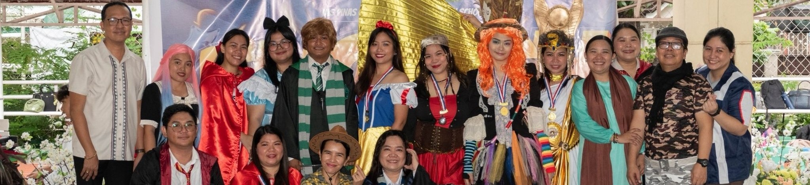
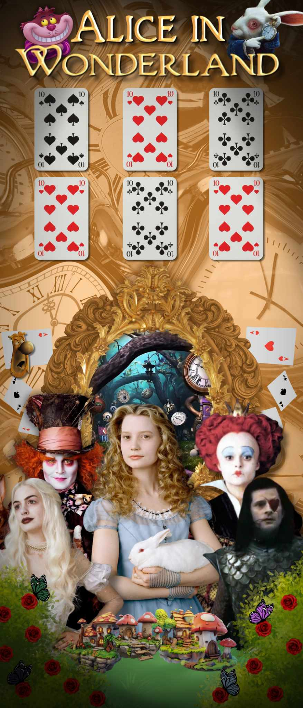
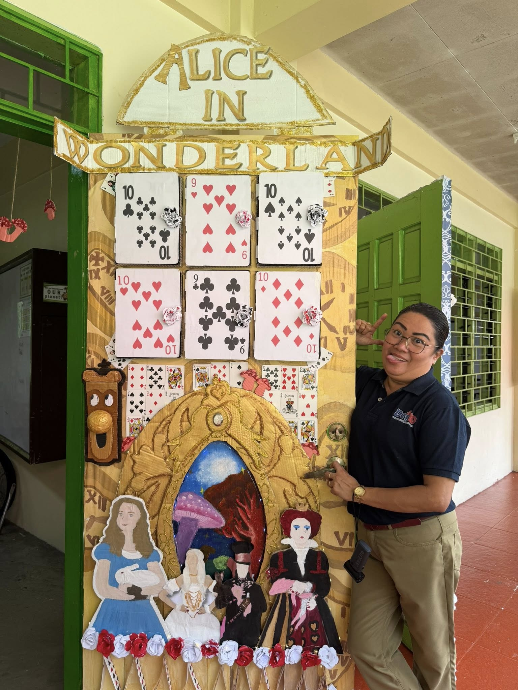
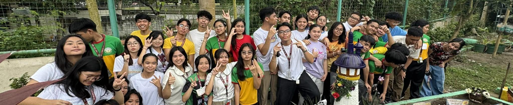
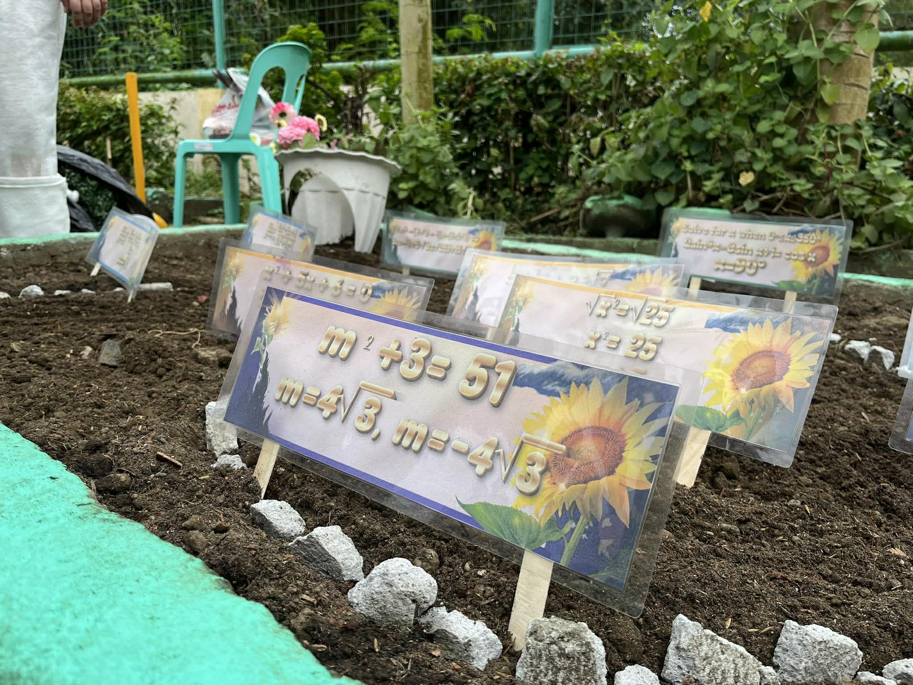
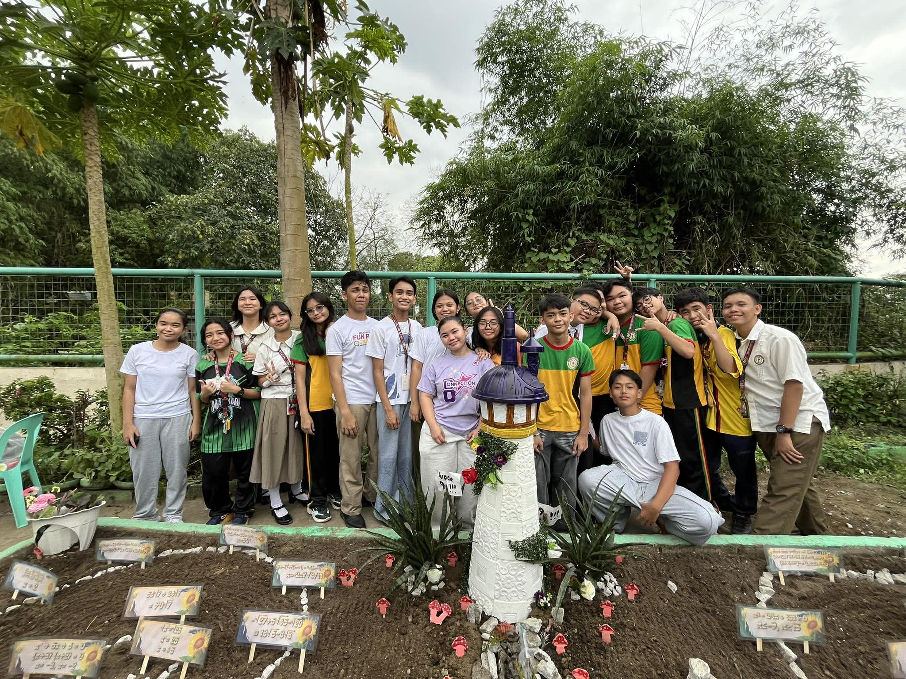
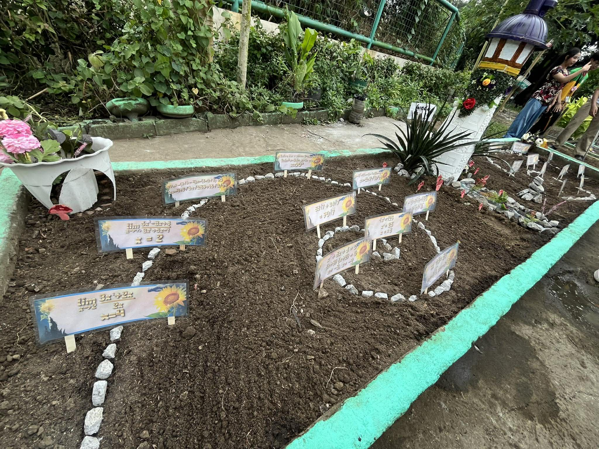

English Month

Book Character Parade
The event that kickstarted English Month. I remember I was running a little late this morning that's why I was nervous to arrive at school. I was a bit shaky doing my makeup in the car so I was also afraid that it didn't turn out good. But all things went well. I didn't go too fancy with my outfit, just something that was practical to walk in especially under the heat of the scorching sun. I had fun.

Door Book Cover
The door book cover section performance task was a really memorable event for me in celebration of English Month 2025 because it let us showcase our creativity and unity as a class. I was honored to be the one who designed the concept and the draft for our door book cover. It was really fun working with my classmates, getting paint all over ourselves, even getting my hands sticky from kneading a paper mache ball, because eventually, our hard work paid off when we were declared the champion of the Door Book Cover Competition.
A part of the reason why this event has a special place in my heart is because of the way we presented our door book cover to the panel of judges. I was lucky enough to be chosen to play "Alice." Though my wig did not fit me, we still managed to deliver a somewhat decent performance (from what I remember).




Booklandia
It was nice watching Booklandia as an audience member instead of the one competing like last year. I had the chance to put makeup on Emman (fake bruises) for a while, that was fun too. I was shocked at the huge budget upgrade from last year, I wish I had competed this year instead of the previous one. But it's okay, I enjoyed the performance of every pair and I think the winners were very well deserved.


Values Month

VPop
VPop, is in my opinion, the most-awaited event of the school year, followed closely by the MVP pageant. Our section has worked so hard to get up to this point, and I am so incredibly proud of each and every one of us. All the countless hours practicing and going home after the sun has already set paid off because we took home the title of “Champion” and we also managed to defend our win in “Nutrichant.”

MVP Pageant
The MVP Pageant was really fun and memorable for me because I got to style our candidates and I got to even coach them in the Question and Answer portion. Our Ms. MVP candidate took home the crown meanwhile our Mr. MVP candidate went home as the first runner up. I am proud of the both of them.


Math Month

Math Idol
I had the chance to showcase my skills in songwriting and producing when Math Idol rolled around. I headed in the tune making and songwriting of our original track “Betting on Me” and I had lots of fun performing it in front of Grade 9 and 10. Our band "Banda Dito, Banda Doon" or BD SQUARED for short, won "Best Band" in the Math Idol Competition.



Math Garden
Though I did not directly participate in the Math Garden, I enjoyed witnessing both my classmates and batchmates working hard to create the most beautiful garden. I really liked the concept of Tangled being used in the garden, everything was just put together so nicely and cohesively, there was no shadow of a doubt that it was going to win.



